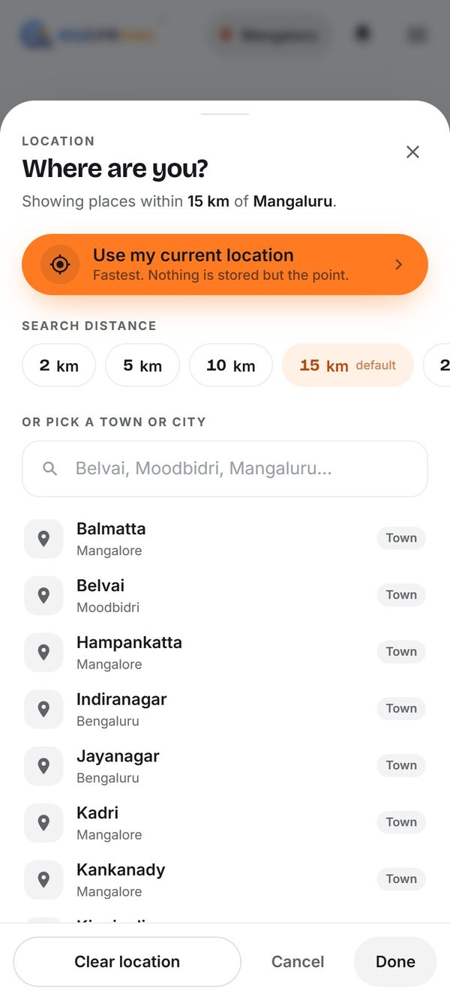
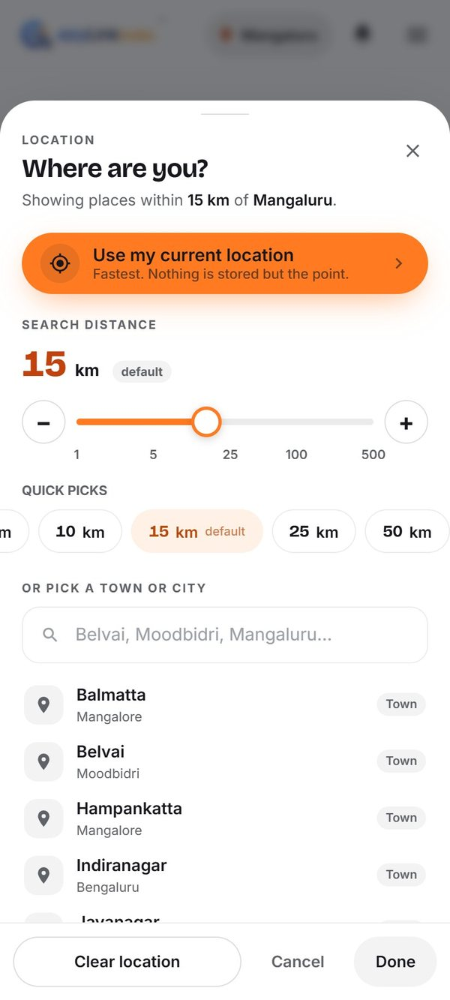
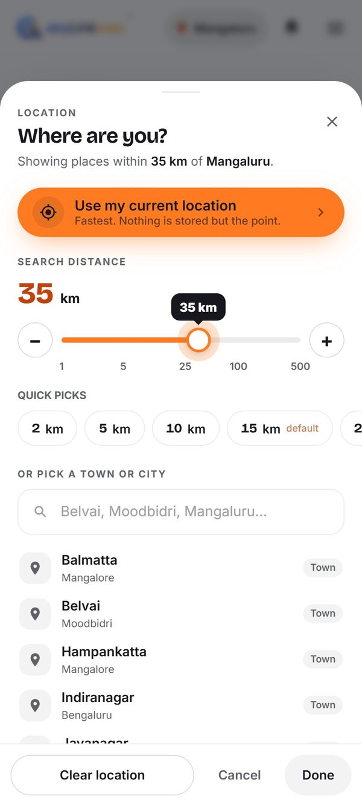
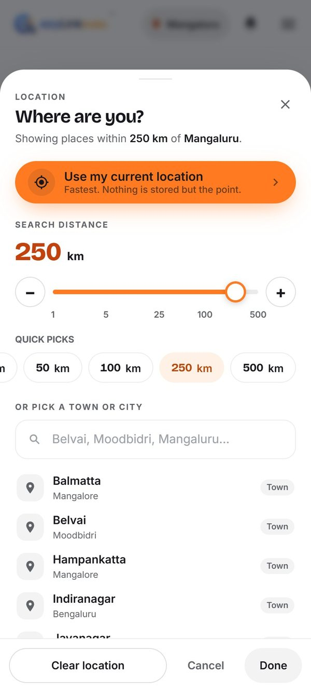
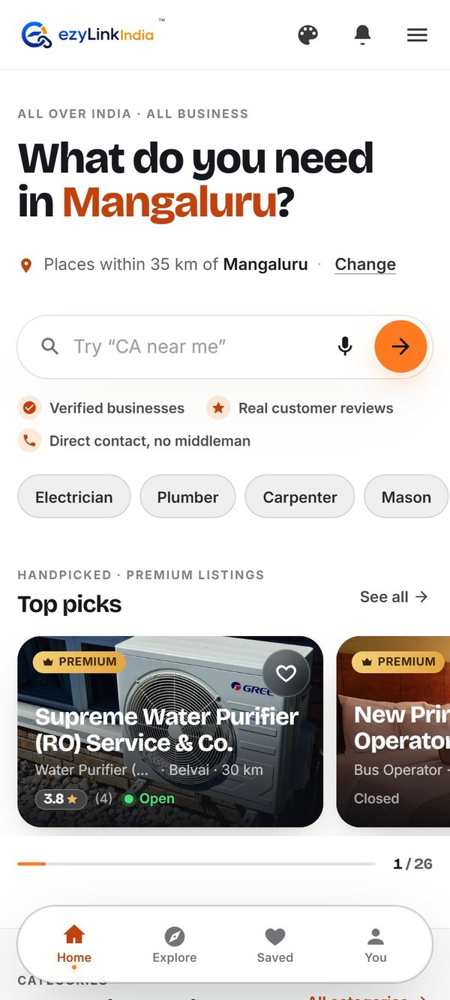
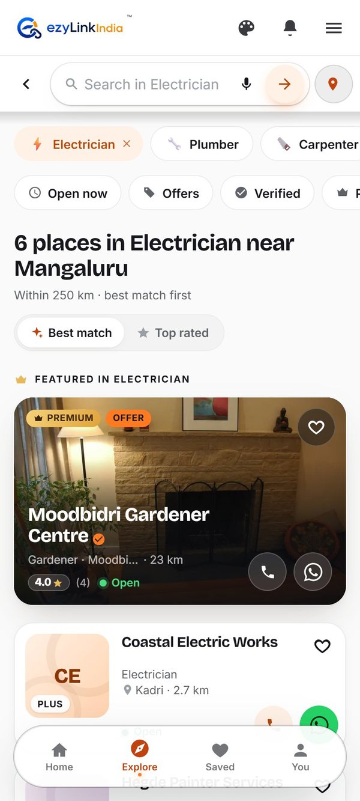

Today the distance stops at 100 km because the app only offers six fixed buttons (2, 5, 10, 25, 50, 100 km). Here's a slider that lets people pick any distance from 1 to 500 km. The quick-pick buttons stay underneath.
Good news: the server already accepts up to 500 km. The 100 km stop is only in the screen, so this is a design change with no backend work, on both the website and Android.
The last two screens below are the real live site with a real 35 km and 250 km setting, not mockups: at 35 km, Top picks in Mangaluru goes from 1 to 26 Premium businesses.




These two use the real saved distance on the live website, shown with the Way B header (palette icon).


The slider screens were made on the live ezylinkindia.com, with the slider added in the browser for the mockup only. Nothing in the app has changed yet. Android would get the same slider in its location sheet. Tap any screen to see it full size. Palette icon header (Way B) · All theme options.